Monitors
CPU, memory, disk and network dashboards for every instance and physical server, straight from Prometheus — defined in YAML, up to 60 days back.
Explore monitors →Rassvet (рассвет — “dawn”) is a single-binary dashboard for OpenStack. Rust on the server, React in the browser, Keystone tokens never leave the backend. Sign in to every cloud you run and switch between them in one click. Built for the people who live in their clouds every day.
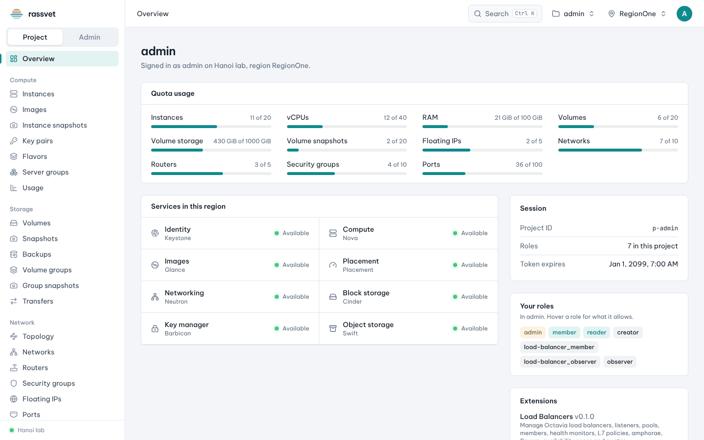
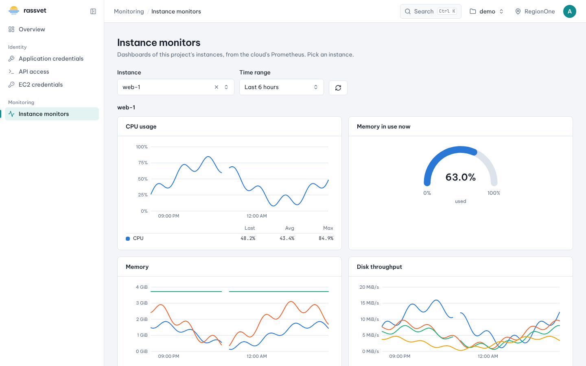
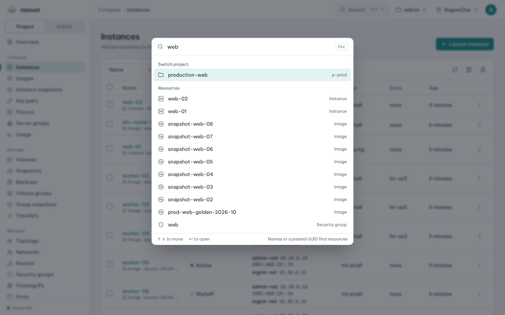
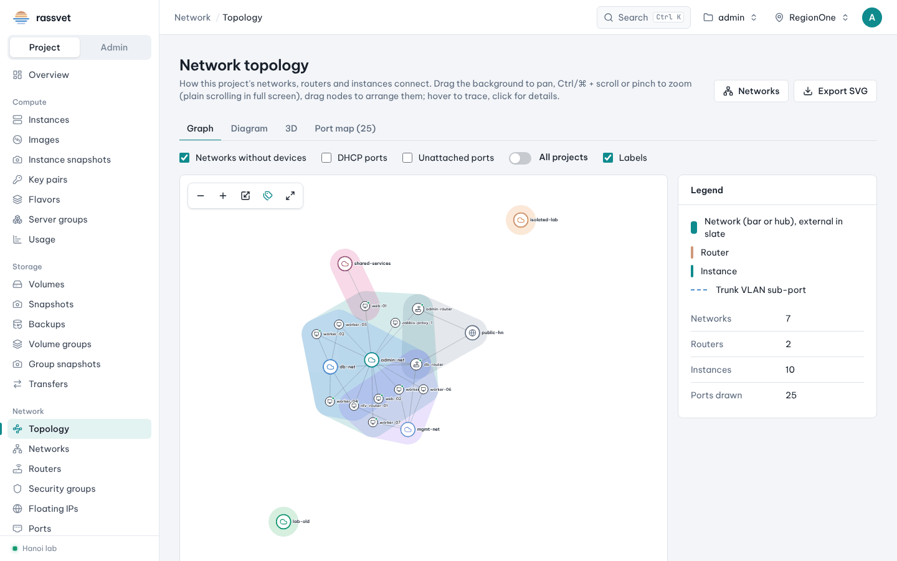
One process, one config file, a UI that is fast enough to keep up with your keyboard.
CPU, memory, disk and network dashboards for every instance and physical server, straight from Prometheus — defined in YAML, up to 60 days back.
Explore monitors →Press ⌘K and go anywhere: pages, actions, resource names, IPs, CIDRs or a pasted UUID.
See it in action →An extension is a Rust crate plus a React folder. It brings its own routes, nav entries, palette actions, Terraform export and cleanup finders, and the host needs no changes. Octavia, Magnum, Designate and Monitors are all built this way.
Build one →The React UI is embedded into the Rust binary. cargo build --release and ship.
Opaque HttpOnly cookies, CSRF headers, sign-in throttling, encrypted memcached sessions.
Sign in to all your clouds at once and switch per tab without signing in again.
See how →Force graph, diagram and a three.js view of networks, routers and ports — export as SVG.
Turn resources you clicked together into code, with references, lookups and import blocks.
Find idle volumes, floating IPs and leftovers wasting quota — per project or across all.
The command palette searches every kind of resource the cloud has — instances, volumes, ports,
routers, secrets, DNS zones, Kubernetes clusters — plus pages and actions. Paste a UUID and it
opens the resource. Type vol:db to search one kind only.
<alias>:<name> scoped search, IPs and CIDRsLab, staging and production. Hanoi and Saigon. Your own OpenStack and a customer's. Sign in to all of them once and switch in one click. No second browser, no private windows, no signing in again.
Signed in as admin on Hanoi lab, region RegionOne.
Pick a cloud from Signed in to in the top bar, or press ⌘K and type its name. You land on the same page in the other cloud, with the user and project you use there.
Each browser tab remembers its own cloud. Keep lab on the left and production on the right, and compare flavors, images or security groups while you work.
Every cloud has its own accounts and its own Keystone tokens, stored on the server and never mixed. When one token expires, only that cloud is signed out.
The sign-out icon next to a cloud leaves only that cloud. Sign out in the account menu leaves every cloud at once.
Pick a Cloud on the sign-in page and use a password or an application credential.
Cloud menu → Sign in to another cloud. Enter that cloud's credentials and stay signed in to the others.
Cloud menu, ⌘K, or a different tab. Every page reloads its data for the cloud you picked.
When a cloud's sign-in expires, its tabs move to a cloud you are still signed in to.
[[cloud]]
id = "hanoi"
name = "Hanoi lab"
auth_url = "https://keystone.hn.example.com:5000/v3"
default_domain = "Default"
[[cloud]]
id = "saigon"
name = "Saigon lab"
auth_url = "https://keystone.sg.example.com:5000/v3"
interface = "public" # public | internal | adminX-Rassvet-Cloud?rassvet_cloud=.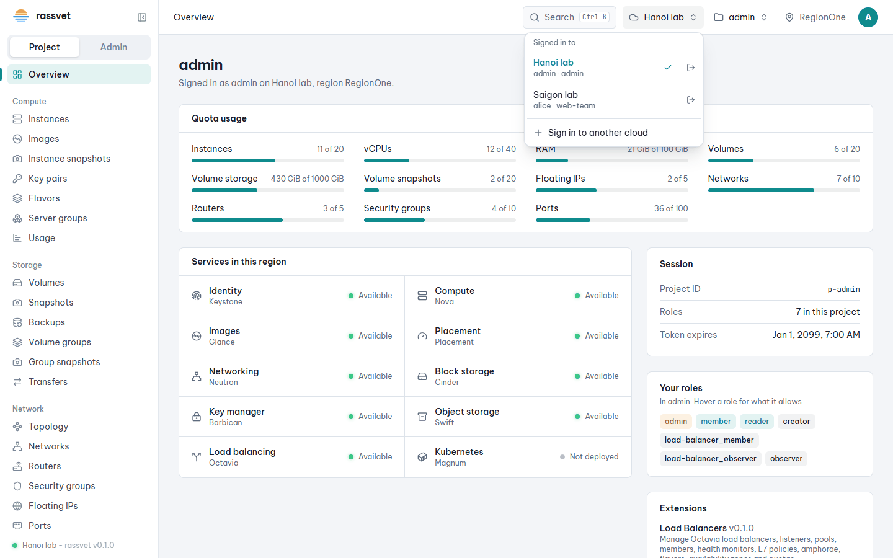
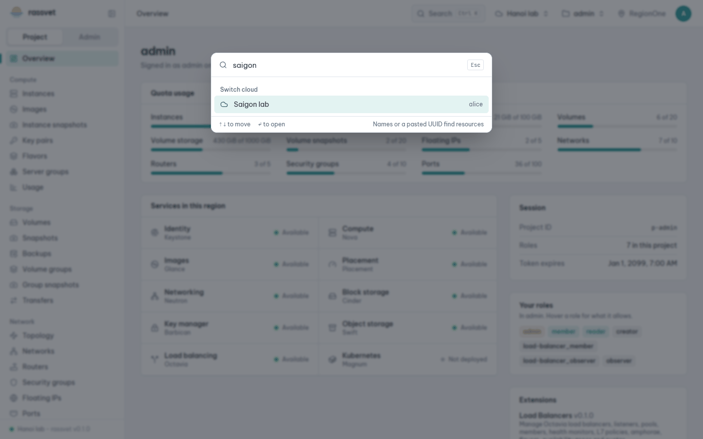
Instance monitors for every project user, physical server monitors for admins. Panels are plain YAML: copy the built-ins, change a query, reload.
| Series | Last | Avg | Max |
|---|
# instances: the libvirt exec script
- dashboard: cloud.*
title: Instances
kind: instance # or physical
panels:
- name: cpu
title: CPU usage
unit: percent
queries:
- query: >-
100 * sum(rate(libvirt_cpu_user{
guest_id="$guest_id"}[$__rate_interval]))
/ 1e9 / max(libvirt_cpu_number{...})
legend: user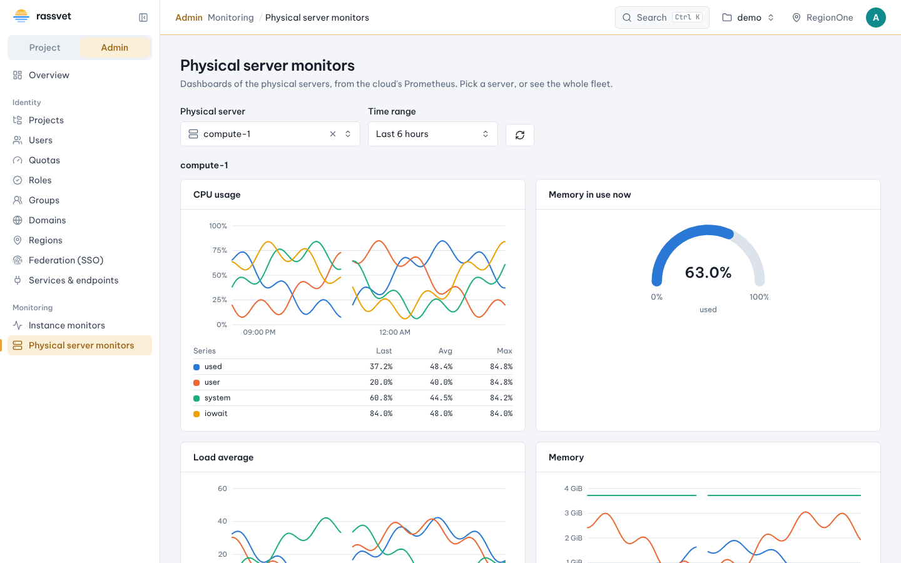
Octavia, Magnum, Designate and Monitors are all extensions. Each one is a compile-time Rust crate with its own React UI — the host has no extension-specific code.
ExtensionA manifest with required service_types, nav items and axum routes mounted at /api/ext/<id>.
ExtensionUiRoutes under /ext/<id>/…, importing components and the API client only from @rassvet/sdk.
Add ext-<id> in Cargo, register it — it appears only where the catalog has the service.
A small, strict design language so every page behaves the same — learn one list, know them all.
Neutral surfaces that stay out of the way of your data.
Reserved for the active state and the primary action.
Green, amber, red — for resource state only, never decoration.
{ }Readable UI type, monospaced IDs, IPs and code.
Filter, sort, server-side search, column chooser, CSV export and a ⋮ menu on every row.
Row menus and the detail page share the same set of actions.
Entries appear only when the cloud lets the user use them.
The launch wizard reviews quota impact before anything is created.
Filters, instance and time range live in the address bar.
Both themes, a collapsible sidebar, and the choice is remembered.
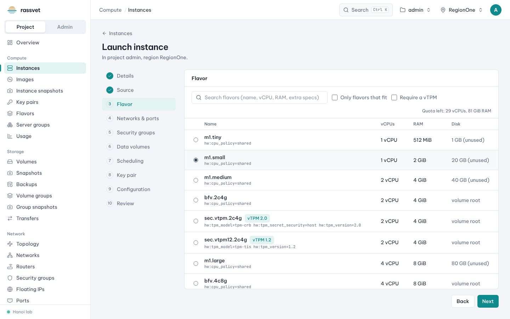
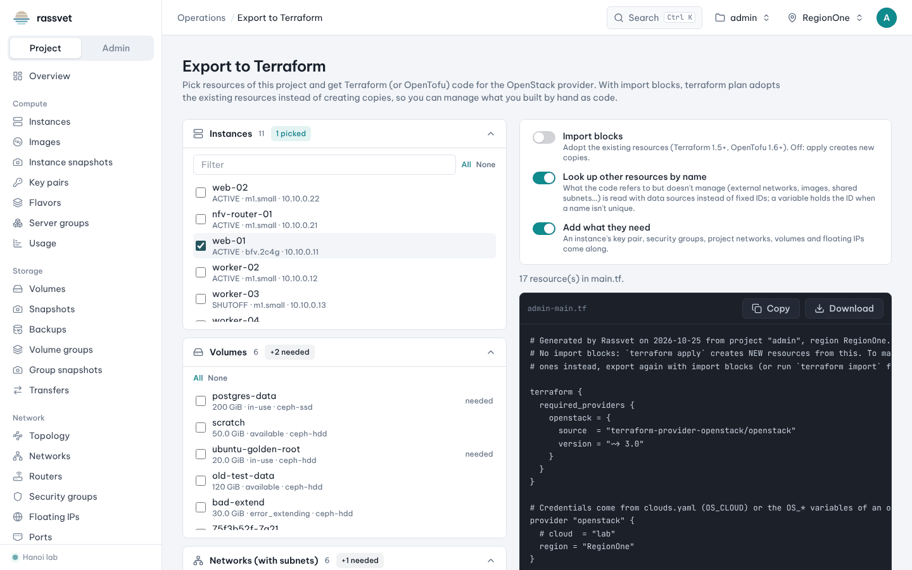
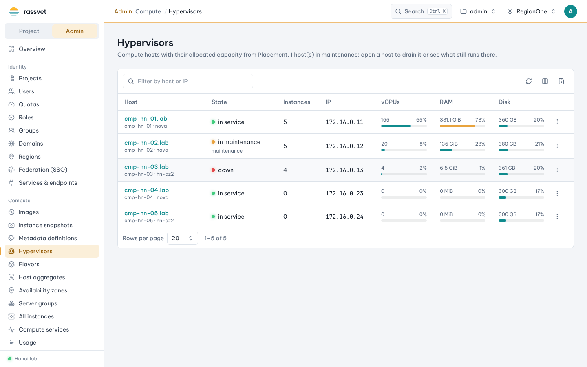
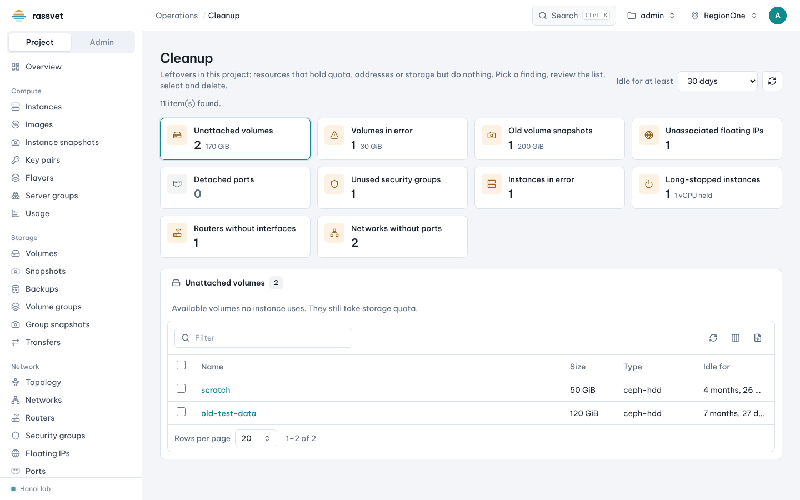
Requirements: Rust 1.88+ (edition 2024), Node 22+, pnpm 10+. Copy
rassvet.example.toml to rassvet.toml and set your Keystone auth_url.
$ cd ui && pnpm install && pnpm build && cd ..
$ cargo build --release
$ ./target/release/rassvet --config rassvet.toml
# then open http://localhost:8080$ cargo run -p rassvet -- -c rassvet.toml # API on :8080
$ cd ui && pnpm dev # UI on :5173
$ cargo test && cargo clippy --all-targets# rassvet.toml
[server]
secure_cookies = true
[memcached]
servers = ["10.0.0.11:11211", "10.0.0.12:11211"]
secret_key_file = "/etc/rassvet/session.key"